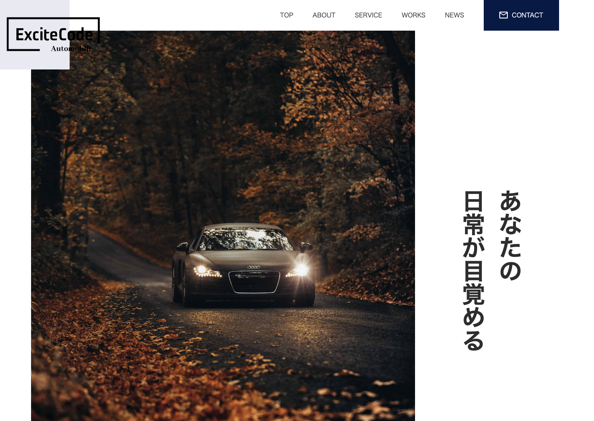

Portfolio — Web Coder
認識のズレをなくし、
手戻りのない実装を。
デザインに込められた意図を丁寧に汲み取り、
細部まで揺るがないコーディングでお応えします。
HTML/CSS・JavaScript・WordPress。
制作実績
Works
ダイビングショップサイト
WordPress ─ 自主制作
LPからのWordPress化を想定した設計。BEMによるCSS設計で、保守・改修のしやすさまで考慮しました。
サイトを見る→
輸入車販売サイト
WordPress ─ 自主制作
スライダーやアニメーションを実装。カスタム投稿タイプで、お知らせや実績を動的に管理できる構成に。
サイトを見る→
フィットネスジムLP
HTML / CSS ─ 自主制作
スクロールに寄り添う控えめなアニメーションを実装。SP・PC両対応のレスポンシブ設計です。
サイトを見る→
表参道カフェ
HTML / CSS ─ 自主制作
洗練されたカフェサイトを、余白や文字組みの細部まで丁寧にコーディングしました。
サイトを見る→対応業務
Service-
i.
コーディング / LP制作
デザインカンプをもとに、HTML/CSS/JavaScriptで忠実に再現します。レスポンシブ対応、アニメーション実装も承ります。
-
ii.
WordPress構築・カスタマイズ
オリジナルテーマの構築から既存テーマの改修まで。ACFを活用した、更新しやすい管理画面の設計を得意としています。
-
iii.
既存サイトの修正・改修
細かな修正や下層ページの追加など、スポットのご依頼にも柔軟に対応します。お急ぎの案件もご相談ください。
-
iv.
レスポンシブ対応
PC・タブレット・スマートフォン、どのデバイスでも崩れない実装を。細かい幅での表示確認まで徹底します。
私について
About
小山内 知永 Tomonaga Osanai
はじめまして。Web実装を専門とするコーダー、小山内知永と申します。
HTML/CSS・JavaScript・WordPressを中心に、制作会社様やディレクター様の実装パートナーとして活動しています。細かな作業が得意で、ズレや違和感に気づきやすいことが持ち味です。
繁忙期の短納期案件や、細かな修正のご依頼など、静かに、確実に、お力になれれば幸いです。
- 壱認識ズレを防ぐヒアリング
- 着手前に不明点を整理してお伺いし、確認のお手間を最小限にいたします。
- 弐細部まで丁寧な実装
- 余白、文字組み、レスポンシブの崩れまで細かく確認し、手戻りの少ない納品を心がけます。
- 参即レス・安定稼働
- 週40時間の稼働が可能です。お急ぎの修正にも柔軟に対応いたします。
Skill
- HTML / CSS Advanced
- JavaScript / jQuery Intermediate
- WordPress Intermediate
- Sass / SCSS Intermediate